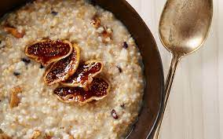

Oatmeal is made from putting milk and oatmeal together into a bowl and heating it up till it is are cooked. Yum
Ingredients
- Milk
- Heat
- Old Fashioned Oatmeal
Directions
- Take some oatmeal put it into a bowl or pot
- Add milk until all oats in ur bowl or pot are floating
- Cook for 3 minutes or until desired consistency(Oats thicken infinitly almost!)
- Add Ghee and Pink salt to ur oats and mix it around alot!
- Let your Oatmeal cool and thicken for 5 minutes
- Enjoy your deliciously healthy and great starter for the day breakfast.
Return to top